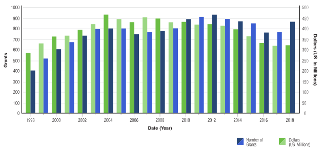

2018 Overview and Highlights
A look back at fiscal year 2018 for NCI’s Division of Cancer Control and Population Sciences
Download the 2018 ReportInvestments in Cancer
Control Research
Researchers funded by DCCPS have advanced the science to improve public health for more than two decades, and we celebrate their scientific advances and research accomplishments in cancer control and population sciences. Major programmatic areas include epidemiology and genomics research, behavioral research, health care delivery research, surveillance research, and survivorship research.
In FY18, DCCPS funded 647 grants valued at more than $433 million, with work in the United States and internationally aimed to reduce risk, incidence, and deaths from cancer, and to enhance the quality of life for cancer survivors. In addition, the division funded $88.5 million in contracts, which includes the SEER Program. While the majority of DCCPS funding is for investigator-initiated research project grants, the division also uses a variety of strategies to support and stimulate research such as multi-component specialized research centers and cancer epidemiology cohorts.
DCCPS Research Portfolio by Fiscal Year
Opportunities
for Researchers
In addition to encouraging scientific ideas for researchers through investigator-initiated applications and omnibus solicitations, DCCPS develops and participates in NIH funding opportunities aimed at stimulating new directions in specific research to examine, discover, and test methodologies to improve public health.
More Funding OpportunitiesThe following are examples of recent funding opportunity announcements to encourage research projects in emerging or priority areas:
- Modular R01s in Cancer Control and Population Sciences (PAR‑18‑869)
- Secondary Analysis and Integration of Existing Data to Elucidate the Genetic Architecture of Cancer Risk and Related Outcomes (PA‑17‑239, PA‑17‑243)
- Core Infrastructure and Methodological Research for Cancer Epidemiology Cohorts (PAR‑17‑233)
- Using Information Technology to Support Systematic Screening and Treatment of Depression in Cancer (PA‑18‑492, PA‑18‑493)
- U.S. Tobacco Control Policies to Reduce Health Disparities (PAR‑18‑675, PAR‑18‑674)
- Tobacco Use and HIV in Low and Middle Income Countries (PAR‑18‑023, PAR‑18‑022)